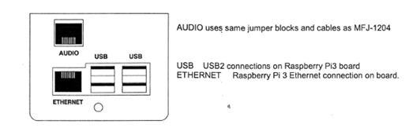
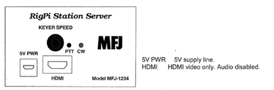
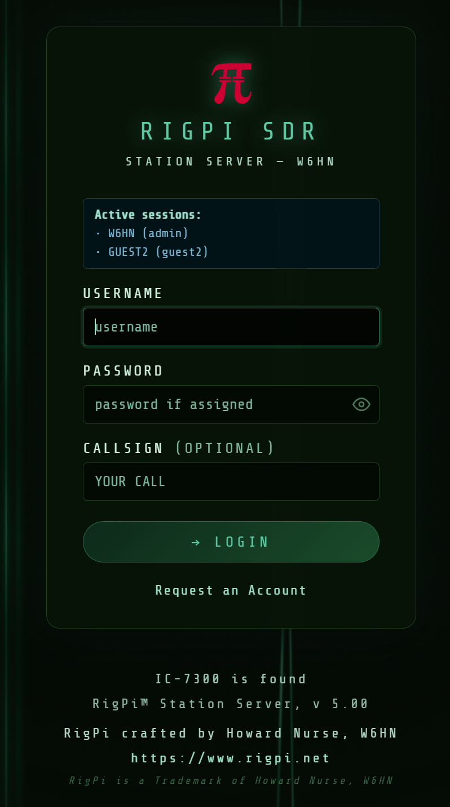
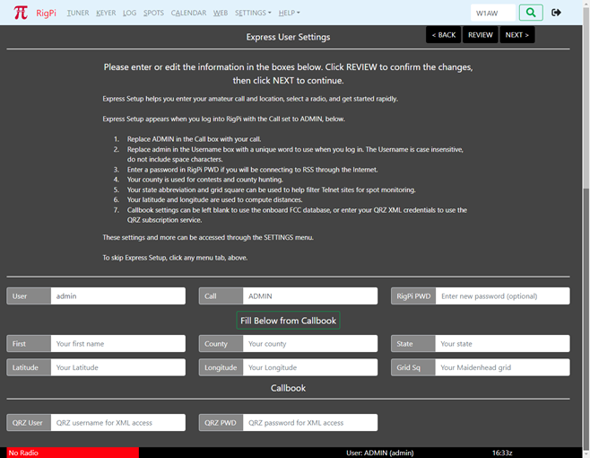
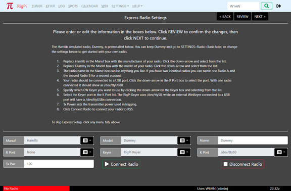

|
<< Click to Display Table of Contents >> Navigation: RigPi Introduction > |
What is Needed
1. RigPi Station Server (RSS)
a. Raspberry Pi 4B+ or Raspberry Pi 5 (recommended)
b .5.1-volt, 3-amp Power Supply with a USB-C connector.
c. An Ethernet cable or Wi-Fi Internet connection to your router
d. Another computer or mobile device on the same network, or
e. Monitor with a micro HDMI connector. USB keyboard and USB mouse
f. For remote operations, a browser on your mobile device
2. Ham Radio Transceiver
a. CAT USB interface cable (or serial-to-USB adapter) for control and (if supported) audio
b. Audio cables for VoIP or digital mode software (or a radio with internal audio CODECs), CW and PTT cables, or via CAT.
Connecting RSS to the Internet (Ethernet Connection)
The drawings below are for the original MFJ-1234 which uses a Raspberry Pi3B+ board. The MFJ-1234B/C have a slightly different design to accommodate the connectors on a Raspberry Pi 4B.

1. Connect an Ethernet cable from your router to RigPi Station Server.

2.Plug in the RSS 5.1-volt power supply.
The two lights below the RSS KEY jack indicate power (red) and activity (green). The green light blinks as RigPi boots. The red light should not blink except once during booting. If it does, your power supply may be underrated or faulty.
3. On another computer or mobile device connected to the same network, open a browser window. Navigate to rigpi5.local.
Apple Bonjour is required on Windows computers to find rigpi5.local. See the Technical topic in Help for more information on Bonjour.
Without Bonjour, you can use the RigPi IP address instead. Log in to your router and look at connected devices. You will see the Raspberry Pi listed there along with its IP address.
4. The RSS Login screen appears after RSS has completed the boot process. (See below.)
Connecting RSS to the Internet (Wi-Fi Connection)
RSS has built-in Wi-Fi if an Ethernet connection isn't convenient. If you need to connect using Wi-Fi rather than using an Ethernet connection, a monitor/keyboard/mouse must be connected to RSS to set it up.
1. Connect a computer monitor having a micro HDMI input, USB keyboard and USB mouse to RSS.
2. Plug in the RSS 5.1-volt power supply.
The two lights below the RSS KEY jack indicate power (red) and activity (green). The green light blinks as RigPi boots. The red light should not blink except once during boot. If it does, the power supply may be underrated or faulty.
3. The Raspbian Wayland Desktop appears after RSS has completed the boot process.
4. In the upper-right corner of the Desktop click the Network icon (Up/Down arrow).
5. Select Turn on Wi-Fi, then click the Network button again.
6. Select the network you wish to join from the list.
7. In the Pre Shared Key box enter your Wi-Fi password, then click OK.
8. While the Desktop is open, click the Raspberry Menu icon and navigate to Preferences>Control Centre>Localization.
9. Enter the Locale, Timezone, Keyboard and Wi-Fi Country for your location.
10. Click the RSS icon (a Pi symbol) to start RSS. The RSS Login screen appears.
Set Screen Resolution (for VNC connection to desktop)
To change the VNC desktop to a higher or lower resolution, a Screen Configuration program is provided with Trixie. Open the Application menu on the desktop and go to Preferences>Control Centre->Screens. Select the resolution you wish to use. Go to Configure->Apply to set the resolution.
Set Screen Resolution (for HDMI connection to desktop)
To set the HDMI resolution on a Raspberry Pi running the Trixie distribution, follow these steps:
1. Open the terminal on your Raspberry Pi or connect to it remotely using SSH.
2. Edit the configuration file for the HDMI settings using the following command:
sudo nano /boot//firmware/config.txt
3. Look for the lines related to HDMI settings. Scroll down or use the arrow keys to navigate. You should see lines starting with `hdmi_group` and `hdmi_mode`.
4. Uncomment the desired `hdmi_group` and `hdmi_mode` lines by removing the '#' character at the beginning of each line. Refer to the official Raspberry Pi documentation for the available HDMI modes and their corresponding values.
5. Once you have uncommented the desired lines, save the changes by pressing Ctrl + X, then Y, and finally Enter to confirm.
6. Reboot the Raspberry Pi for the changes to take effect. You can reboot by running the following command:
sudo reboot
After the reboot, the HDMI resolution should be set according to the values you specified in the `config.txt` file.
Connecting your Radio
RigPi controls the frequency and mode of your radio through a CAT (Computer Aided Tuning) connection to a USB port. Most modern radios provide a USB connection which require a USB A-B cable. Older radios have a variety of connection requirements, although each manufacturer is usually consistent from one radio to another. Check the manual for your radio for specifics on what type of cable is required.
Manufacturer |
Older Model CAT Connection |
Kenwood |
DB9 Serial, requires serial-to-USB adapter |
Icom |
CI-V 3.5mm, requires CI-V-to-USB adapter |
Yaesu |
DB9 Serial, requires serial-to-USB adapter. Older Yaesu radios also require a level converter. |
Audio connections to your radio are covered later in this manual. CW Keying requires either a cable between the KEY jack on RSS and your radio's keying input (more later), or CAT control.
Accessing RigPi
RigPi 5 is accessed by entering rigpi5.local in a browser's navigation bar. If your browser can't find rigpi5.local, it may be necessary to install Bonjour on your computer. See Bonjour Help elsewhere in this manual for details. Alternatively you can use the IP address of RigPi 5 as found in the list of connected devices in your router.
Exploring RSS, Startup Windows
The RigPi Login screen is shown below. If you have set up a schedule for rig use, additional information will be shown on the Login window.

1. RSS initially uses Username 'admin' and no (blank) Password.
2. Enter admin in the USERNAME box.
3. If you are a guest and want your callsign to be recognized, enter it in the CALLSIGN box. Passwords are required for Guest accounts.
4. A guest can request an account by clicking the Request an Account button.
5. For the Admin account, press Enter (leaving the Password field blank).
6. The RigPi Express User Settings window appears next.
RSS Express Settings have two windows designed to get you going rapidly. Express User Settings has fields for your Call, location, and optional QRZ XML subscription credentials. You must enter your call before proceeding.

Click Fill Below from Callbook to enter your name, state and grid square. If you haven't specified QRZ credentials, RigPi uses the onboard FCC database to fill in the information. The FCC option only works for US calls. Click NEXT to go to the Express Radio Settings window.

Express Radio Settings is configured with the Hamlib simulated radio, Dummy. You can set up your own radio or continue to use Dummy by skipping the Express Radio Settings.
Note: RigPi uses the default Baud rate for your radio in the Express Radio Settings window. If you have changed the radio's Baud rate you must use that Baud rate in RigPi. Skip the Express Radio Settings window and enter the Baud rate in SETTINGS->Advanced Radio. When done, click NEXT.
Back Up Your Memory Card
Memory cards have a limited lifetime, so it is good practice to back up your card as insurance. For details on how to make a backup copy please refer to the System topic in the Troubleshooting section of Help.
Shutting Down
Never disconnect the RigPi Station Server power supply without shutting down the RigPi Raspberry Pi first. Disrupting the power before shutting down can corrupt the microSD memory card.
To shut down RigPi:
1. Go to SETTINGS>System.
2. Click the Shutdown button.
3. Wait for the green activity light on the Raspberry Pi to stop blinking.
4. Disconnect the power.
Enjoy RigPi! Additional Help is available
• RSS Toolbar HELP
•ASK ELMER on the RigPi toolbar or in the Help menu
•Online forum: RigPi Forum
•RigPi online help: Online Help
•PDF Help file: Help PDF